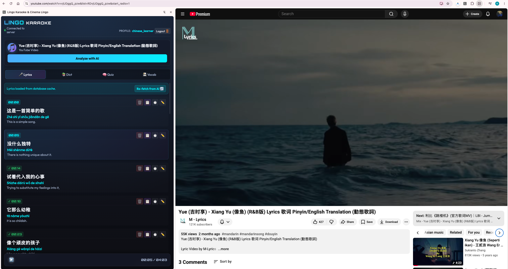
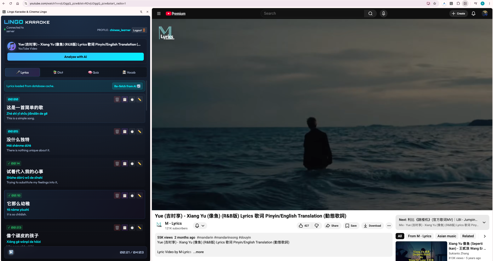
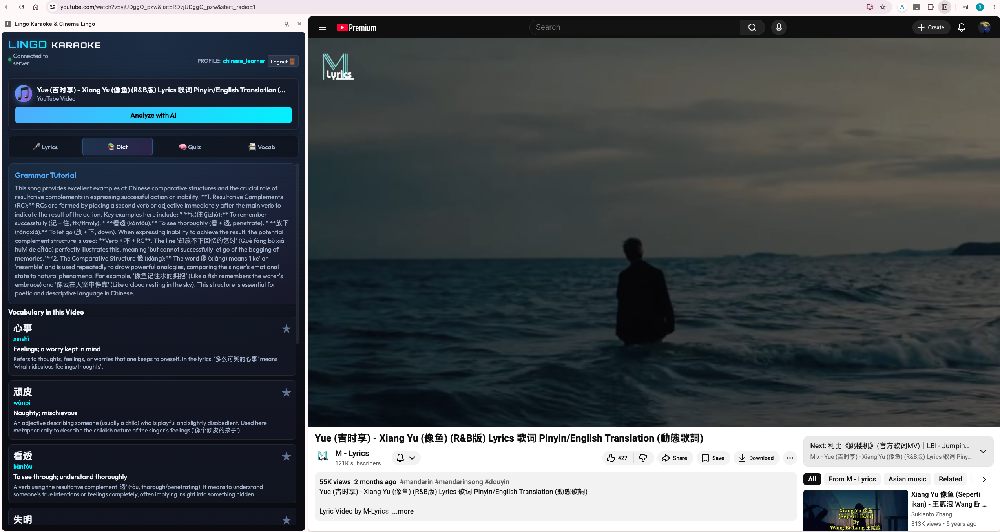
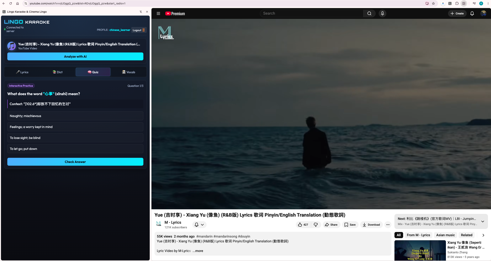
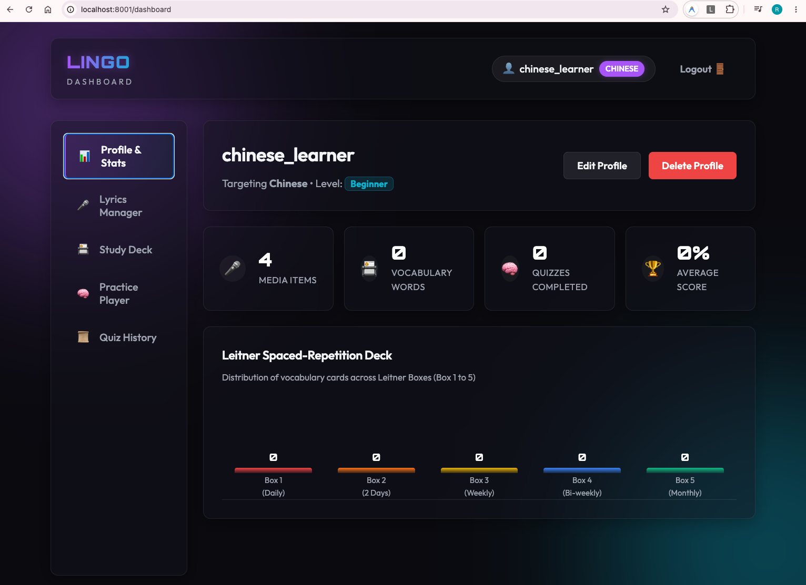
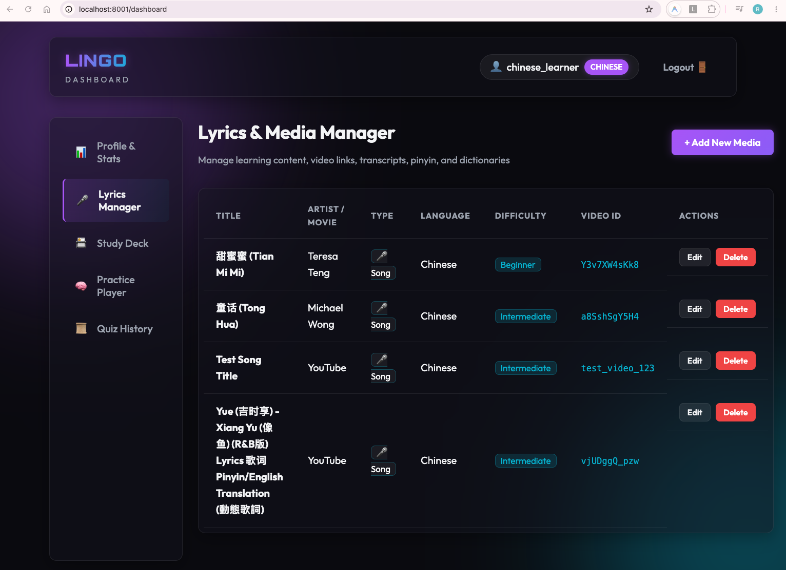
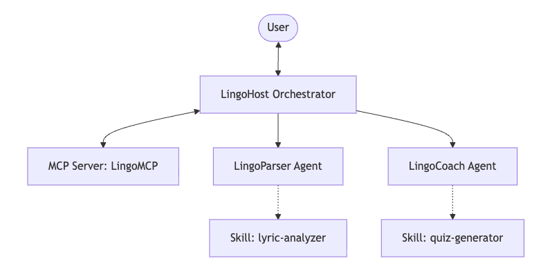

Master Chinese singing with the
songs you already love.
Turn any YouTube music video into an interactive karaoke lesson with synced pinyin, translation, grammar breakdowns, and quizzes using an advanced AI vocal coach.

Intelligent Features for Modern Learners

Karaoke lyrics + pinyin, synced to the video
Sing along as lyrics and Hanyu Pinyin with colored tone markers highlight in real time, synced syllable-by-syllable to the audio. Follow the rhythm while reading characters and learning the correct tones naturally.

Grammar & vocabulary, explained
Understand the lyrics. Dive into detailed sentence structure notes and vocabulary explanations generated by dedicated AI tutor agents, clarifying particles, idioms, and context-specific meanings.

Interactive quizzes
Test what you've learned. Put your comprehension to the test with dynamically generated, text-matching fill-in-the-blank, character translation, and tone identification quizzes based on song segments.

Leitner spaced-repetition deck
Lock in new words forever. Bank unfamiliar vocabulary during karaoke sessions straight to a persistent Spaced Repetition System (SRS) review deck using the Leitner method to ensure long-term retention.

Learner dashboard & library
Track your progress. Review your learning streaks, watch vocabulary acquisition counts climb, and manage a personalized library of studied songs inside a comprehensive companion web dashboard.
How It Works
Choose Your Song
Navigate to any Chinese music video or audio track on YouTube that you want to study with.
Analyze with AI
Click "Analyze with AI" in your Chrome side panel. Collaborating agents immediately fetch, align, and construct tone-marked pinyin with translations.
Sing and Review
Sing along to the synced text, drill challenging grammar structures, solve interactive quizzes, and save words to your persistent review deck.
Cooperating Multi-Agent Architecture

Powered by Google ADK & Gemini
LingoKaraoke uses a multi-agent orchestration framework to achieve real-time lyric alignment and context-aware tutoring.
LingoHost Orchestrator
Coordinates the user experience. It loads learner profiles, queries song catalogs, and routes parsing and review tasks to specialized agents.
LingoParser Lyric Analyzer
Splits audio into precise timestamps, structures Hanyu Pinyin with tones, and outputs literal and poetic English translations (Skill: lyric-analyzer).
LingoCoach Learning Coach
Explains complex syntax, designs customized vocabulary matching and tone quizzes, and structures flashcard cards for the SRS deck (Skill: quiz-generator).
LingoMCP Model Context Protocol
A custom standard stdio MCP server wrapping SQLite databases, allowing LLM agents to perform structured profile, song, and vocabulary mutations.
Get Started
LingoKaraoke is an open-source development prototype built for the Agents for Good Challenge. Follow these simple steps to install the unpacked extension in developer mode.
Clone the Repository
Use Git to clone the project to your local computer.
git clone https://github.com/swaption2009/lingo-agent
Start the Backend Server
Run the FastAPI server which acts as the agent gateway. Make sure you have `uv` installed.
uv run uvicorn app.fast_api_app:app --port 8001 --reload
Load the Extension
Open Google Chrome and navigate to chrome://extensions. Enable Developer mode in the top-right corner, click Load unpacked, and select the chrome_extension folder in the root of the cloned directory.
Start Singing & Studying
Navigate to any Chinese music video on YouTube and click the LingoKaraoke icon in your Chrome Side Panel to trigger your AI tutor.